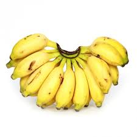
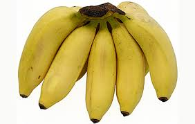
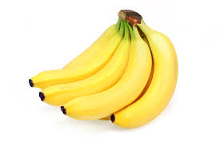
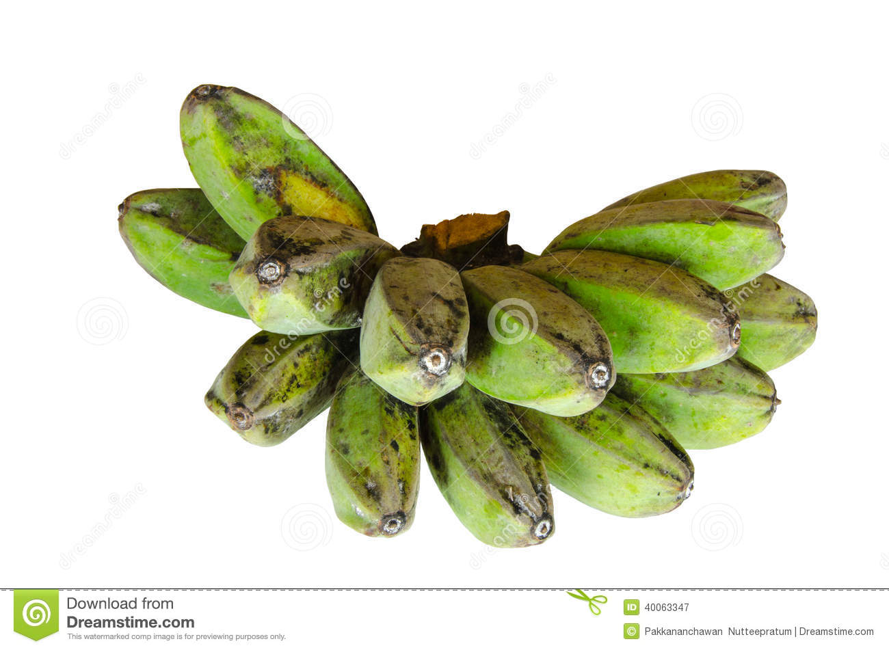

|  |
Dwarf Cavendish leaves are broad with short petioles. Its shortness makes it stable, wind-resistant, and easier to manage. This, in addition to its fast growth rate, makes it ideal for plantation cultivation. An easily recognizable characteristic of this cultivar is that the male bracts and flowers are not shed. The fruits of the Dwarf Cavendish cultivar range from about 15 to 25 cm in length, and are thin skinned. Each plant can bear up to 90 fingers. |
|  |
Latundan bananas, are triploid hybrid banana cultivars from the Philippines. It is one of the most common banana cultivars in Southeast Asia and the Philippines, along with the Lacatan and Saba bananas |
|  |
Lady Finger bananas can grow to a height of 25 ft (7.5 m). Its pseudostem is slender and streaked with reddish brown, but it has a heavy root system that makes it resistant to wind damage. It is resistant to drought and Black Weevil, but is susceptible to Sigatoka.It blooms during mid-summer, late summer, and early fall. It is monocarpic and is propagated asexually. The fruit is 4 to 5 inches (10-12.5 cm) in length, and light yellow. The skin is thin and the flesh is sweet. 12 to 20 fingers are borne in each hand, with each bunch typically having 10 to 14 hands. |
|  |
Saba banana is a triploid hybrid (ABB) banana cultivar originating from the Philippines. It is primarily a cooking banana though it can also be eaten raw. It is one of the most important banana varieties in Philippine cuisine. It is also sometimes known as the cardaba banana, though the latter name may be more correctly applied to a very similar cultivar also classified within the saba subgroup. |